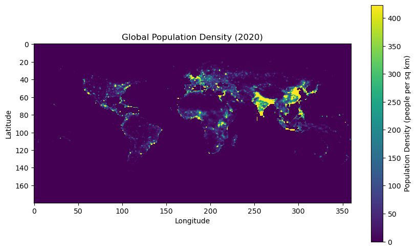

Human Population density
Human Population density#
import rasterio
import numpy as np
import matplotlib.pyplot as plt
import os
path = os.path.expanduser('~/Func_Neo_Phytes/Data/gpw_v4_population_density_rev11_2020_1_deg.tif')
with rasterio.open(path) as src:
population_density = src.read(1)
transform = src.transform
crs = src.crs
bounds = src.bounds
print(f"Population density shape: {population_density.shape}")
print(f"Affine transform: {transform}")
print(f"CRS: {crs}")
print(f"Bounds: {bounds}")
plt.figure(figsize=(10, 6))
plt.imshow(
population_density,
cmap='viridis',
vmin=0,
vmax=np.percentile(population_density, 99)
)
plt.colorbar(label='Population Density (people per sq km)')
plt.title('Global Population Density (2020)')
plt.xlabel('Longitude')
plt.ylabel('Latitude')
plt.show()
Population density shape: (180, 360)
Affine transform: | 1.00, 0.00,-180.00|
| 0.00,-1.00, 90.00|
| 0.00, 0.00, 1.00|
CRS: EPSG:4326
Bounds: BoundingBox(left=-180.0, bottom=-90.00000000000009, right=180.0, top=89.99999999999991)

# convert to h3 grid
import h3
resolution = 3
h3_grid = h3.geo_to_h3(bounds.top, bounds.left, resolution)
print(f"H3 grid index for top-left corner: {h3_grid}")
h3_grid = h3.geo_to_h3(bounds.bottom, bounds.right, resolution)
print(f"H3 grid index for bottom-right corner: {h3_grid}")
import numpy as np
import pandas as pd
import rasterio
from rasterio.transform import xy
import os
import h3.api.numpy_int as h3np
path = os.path.expanduser('~/Func_Neo_Phytes/Data/gpw_v4_population_density_rev11_2020_1_deg.tif')
with rasterio.open(path) as src:
pop = src.read(1)
transform = src.transform
nodata = src.nodata
# get coordinates
rows, cols = np.indices(pop.shape)
xs, ys = xy(transform, rows, cols)
xs = np.array(xs)
ys = np.array(ys)
# flatten
lon = xs.flatten()
lat = ys.flatten()
values = pop.flatten()
# clean
mask = np.isfinite(values)
if nodata is not None:
mask &= values != nodata
lon = lon[mask]
lat = lat[mask]
values = values[mask]
# H3 indexing (FAST)
#h3_cells = h3np.latlng_to_cell(lat, lon, 3)
#h3_cells = h3np.geo_to_h3(lat, lon, 3)
h3_cells = np.array([
format(h3np.geo_to_h3(lat[i], lon[i], 3), 'x')
for i in range(len(lat))
])
# aggregate mean density
df = pd.DataFrame({
"h3": h3_cells,
"density": values
})
h3_mean = df.groupby("h3")["density"].mean().reset_index()
h3_mean
| h3 | density | |
|---|---|---|
| 0 | 830001fffffffff | 0.081605 |
| 1 | 830005fffffffff | 0.122407 |
| 2 | 83000cfffffffff | 0.061204 |
| 3 | 830011fffffffff | 0.036079 |
| 4 | 830018fffffffff | 0.036079 |
| ... | ... | ... |
| 12867 | 83df6afffffffff | 4.538659 |
| 12868 | 83df6bfffffffff | 0.769192 |
| 12869 | 83df6cfffffffff | 3.837568 |
| 12870 | 83df6dfffffffff | 6.028785 |
| 12871 | 83df6efffffffff | 0.933793 |
12872 rows × 2 columns
# save h3_mean to csv
h3_mean.to_csv(os.path.expanduser('~/Func_Neo_Phytes/Data/h3_population_density.csv'), index=False)